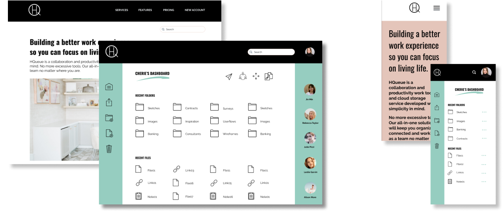
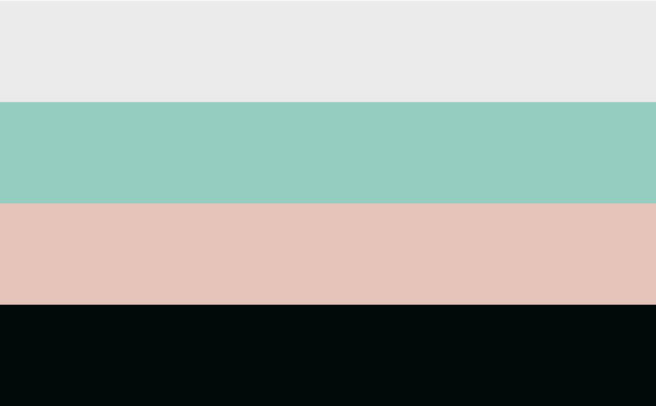

HQueue
HQueue is a collaboration and productivity work tool and cloud storage service developed with simplicity in mind.
No more excessive tools.
An all-in-one solution to keep you organized, connected and working as a team no matter where you are.
ROLES
UX/UI Design, Visual Design, Branding and Identity
TOOLS USED
Adobe Photoshop, Figma, Invision, Draw.io

User Research
I did a deep dive to find out the problems people were occurring when using the existing apps in the market. The client expressed the features they wanted to see but didn’t present the current problems. I polled a select group of potential users to understand where the challenges were to successfully create a solution and to determine a direction.
“What is something you'd like to see differently from other storage and productivity tools already out on the market”
“What feature is the most important to you?”

30
“PEOPLE TESTED”
55%
“WERE PROFESSIONALS”
98%
“WERE EXISTING CLOUD STORAGE USERS”
92%
“USED COMPETITOR APPS”
Problem
When the client came to us to design a new solution for their app they expressed excitement of opportunities in the young and growing cloud storage and organization market. But not knowing the problems and only knowing the features they wanted to implement, we knew that testing users would help us identify the necessary problems to begin to access the immediate needs to identify the scope of work.
Solution
With over 30 people combined throughout our testing process, we found the need for an all-in-one inclusive tool that could make working easier. While at least 92% of testers used competitors such as Google Drive and Dropbox, they wanted an affordable, easy-to-use tool where all work could be done in a single space that included storage, sharing, and collaboration.
Competitive Analysis
I researched 3 big competitors. The largest and most similar cloud storage competitors Dropbox and Google G-Suite and the social sharing platform Pinterest.
Each of these products/platforms serve a similar purpose yet in their own way. Each platform had different features and served specifc needs for the user. None of the competitors had all the qualities the users we polled were looking for.
From our results we were able to create user personas for the ideal users and what their motivation, goals and frustration were.
“90% of CEOs say digital technology is vital to improving productivity, and two-thirds of execs say they’re either “confident” in maximizing productivity in this way”
User Personas
- Age: 22
- Occupation: Student and part-time set-designer
- Location:
- New York
- Tech Level: Interested always, but likes it simple
- MOTIVATION:
- She feels keeping an organized filing structure to store her work will help her with everything now and in the future. With so many options in the market, she wants to find the best one that serves as a one-stop shop for her needs.
- GOALS:
- To learn how to be efficient with technology so that it helps me be productive not distracted
- To find a tool that fits her needs and her wallet
- Find something that can fit both her school life and also support the needs of my personal interests
- FRUSTRATIONS:
- Another day, another productivity tool. Can we just have one that does what it needs to do with room to grow? • She’s constantly on the go, she wants an organization and storage solution that can accomodate that. • Find a solution in which the service she chooses will be around for awhile.
- Age: 48
- Occupation: Professor in Environmental Design
- Location: New York
- Tech Level: Prefers to read a book.
- MOTIVATION:
- He tries very hard for both digital and physical teaching methods. He wants to learn how a storage and organization tool can incorporate into his teaching process to collaborate with his students to be more efficient.
- GOALS:
- To learn more about how apps can help with his work.
- To understand how he can receive assignments and give feedback to his students. • To be open to new processes as technology evolves into our daily lives
- To learn more about how apps can help with his work.
- To understand how he can receive assignments and give feedback to his students.
- To be open to new processes as technology evolves into our daily lives
- FRUSTRATIONS:
- He becomes easily frustrated with technology.
- He finds his system of collaborating with students on the assignments (files) they submit is not the best way.
- Right now he has all his class files in all different locations and wants to be able to find a solution to keep them in one.
User Flows

With the user flows, I wanted to focus on a few key elements from the user stories on both homepage and the dashboard. I sketched my thoughts and then consolidated those sketches before creating the digital diagrams. Digital drawings were created in draw.io
Wireframes
Now that I had the user flows and content strategy in place, I started the wireframe mock-ups. First sketching out ideas then transferring them to a digital mock-up. The intent was to get it as clean as possible so that it could be easily converted for the next round of testing.
Usability Testing
Testing was a crucial part of the process for the development of this app. From the conducted a total of three tests. One In-Person test and two others were done remotely. Testers took time to go through a series of requests to get an overall feel of the flow, the results were able to help me improve the functionality of the app. It looked for patterns and how they interacted with the app or what they had difficulty in. There were many questions, some I was able to answer, others were questions of improvement for the next round. Ongoing testing was a necessity to continously improve the app and its features.
Visual Design + Branding
The name: After doing several mind-mapping word association exercises and starting with the basics of using the CLOUD/Storage words to brainstorm on the name for the brand - I realized I wanted to play off the ALL-IN-ONE element of the app’s feature.
The word HOME and BASE really stuck but I wanted to incorporate the importance this was an ever-growing, ongoing tool in which a business would see continual growth and development. I liked the word “Headquarters” as the home base to a business. Playing off the letter 'Q' in the word Headquarters, I thought a fitting word would be ‘queue’ (representing ongoing and part of the business.) A fun message and play on words for any start-up.


Logo
After deciding on the name, I sketched different ideas and played with type and placement. Simple and modern is what we were going for with the focus being on the H and the Q. After many sketches, placing the ‘H’ inside of the circular part of the ‘Q’ seemed to sit well with what I was going for. It had a nice balance.
I also incorporated color by using the palette for the project to create touches of color.
Style Guide
I created all the branding do’s and don’ts by pulling it all together with a style guide for the client. Combining all the brand elements for the user to understand the brand, how we developed it and the rules on how and proper ways to use it for. The style guide can be helpful for marketing materials, social media, etc.
High Fidelity Mock-ups
With the branding and visual design incorporated into the High fidelity mock-ups we prepared for additional usability testing to allow the users to fully experience the app and be introduced to the brand. Two versions were available, desktop and mobile and refined as it was continually tested and viewed and in particular with usability testing.
Conclusion
Remembering the client’s introduction to this project and seeing the project as it is today now gives a solution to problems we didn’t really know existed at first. What worked, in that case, was the testing. The testing was very valuable and getting feedback from the users were helpful in order to see problems and continually improve the design. Because the client hadn’t expressed the problems originally, I was concerned it would end up being another app in the market that wouldn’t solve the needs. Instead, it developed into an app that had value, was resourceful and it made working smarter not harder.